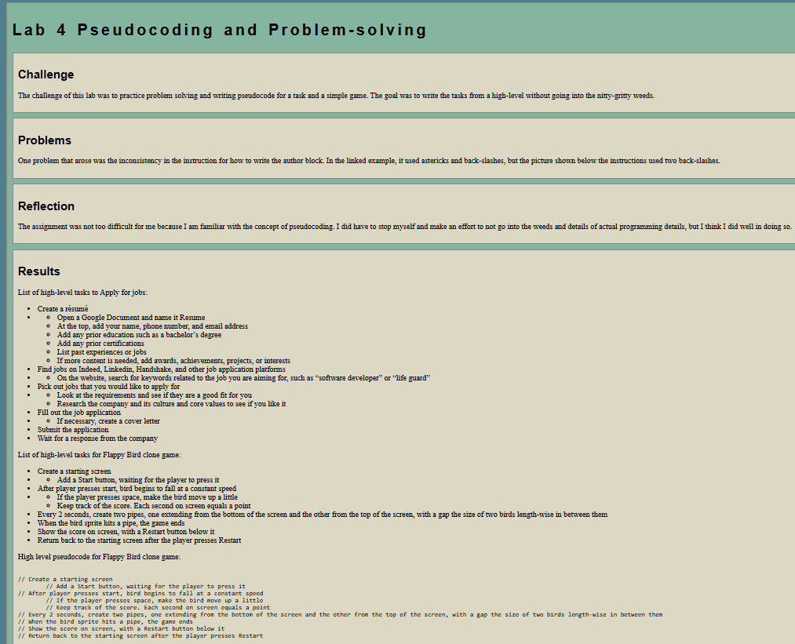

Lab 4: Pseudocoding and Problem-solving
Challenge
The challenge of this lab was to practice problem solving and writing pseudocode for a task and a simple game. The goal was to write the tasks from a high-level without going into the nitty-gritty weeds.
Problems
One problem that arose was the inconsistency in the instruction for how to write the author block. In the linked example, it used astericks and back-slashes, but the picture shown below the instructions used two back-slashes.
Reflection
The assignment was not too difficult for me because I am familiar with the concept of pseudocoding. I did have to stop myself and make an effort to not go into the weeds and details of actual programming details, but I think I did well in doing so.
Results
List of high-level tasks to Apply for jobs:
- Create a résumé
-
- Open a Google Document and name it Resume
- At the top, add your name, phone number, and email address
- Add any prior education such as a bachelor’s degree
- Add any prior certifications
- List past experiences or jobs
- If more content is needed, add awards, achievements, projects, or interests
- Find jobs on Indeed, Linkedin, Handshake, and other job application platforms
- On the website, search for keywords related to the job you are aiming for, such as “software developer” or “life guard”
- Pick out jobs that you would like to apply for
-
- Look at the requirements and see if they are a good fit for you
- Research the company and its culture and core values to see if you like it
- Fill out the job application
- If necessary, create a cover letter
- Submit the application
- Wait for a response from the company
List of high-level tasks for Flappy Bird clone game:
- Create a starting screen
- Add a Start button, waiting for the player to press it
- After player presses start, bird begins to fall at a constant speed
-
- If the player presses space, make the bird move up a little
- Keep track of the score. Each second on screen equals a point
- Every 2 seconds, create two pipes, one extending from the bottom of the screen and the other from the top of the screen, with a gap the size of two birds length-wise in between them
- When the bird sprite hits a pipe, the game ends
- Show the score on screen, with a Restart button below it
- Return back to the starting screen after the player presses Restart
High level pseudocode for Flappy Bird clone game:
// Create a starting screen
// Add a Start button, waiting for the player to press it
// After player presses start, bird begins to fall at a constant speed
// If the player presses space, make the bird move up a little
// Keep track of the score. Each second on screen equals a point
// Every 2 seconds, create two pipes, one extending from the bottom of the screen and the other from the top of the screen, with a gap the size of two birds length-wise in between them
// When the bird sprite hits a pipe, the game ends
// Show the score on screen, with a Restart button below it
// Return back to the starting screen after the player presses Restart
This is a screenshot of the lab 4 page:
